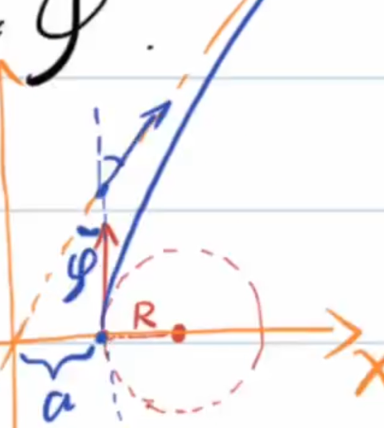

<meta data-alternate="https://freshmark.sunisalex.org/posts/physics/celestial-movement/" data-article="true" data-canonical="https://freshmark.sunisalex.org/en/posts/physics/celestial-movement/" data-description="This article systematically introduces several core topics in celestial motion, including the solution and small quantity approximation of Lagrangian points, hyperbola and parabolic orbit problems, calculus derivation of Kepler&#39;s first law, and detailed answers to several typical exercises." data-freshmark-page data-title="Orbital Mechanics: Final Topics — Freshmark"><main><header class="container article-header"><a href="/en/" class="back-link">← Back to all writing</a><p class="eyebrow article-subject">Physics</p><h1>Orbital Mechanics: Final Topics</h1><p class="article-dek">This article systematically introduces several core topics in celestial motion, including the solution and small quantity approximation of Lagrangian points, hyperbola and parabolic orbit problems, calculus derivation of Kepler's first law, and detailed answers to several typical exercises.</p><div class="article-meta"><time datetime="2026-06-17">June 17, 2026</time><span>14 min read</span><span>Physics Olympiad · Calculus</span><span class="view-count" data-article-view-count hidden>Article views <strong data-article-views></strong></span><a href="index.md" download>Download Markdown</a><button type="button" class="article-share" data-share-article data-share-text="This article systematically introduces several core topics in celestial motion, including the solution and small quantity approximation of Lagrangian points, hyperbola and parabolic orbit problems, calculus derivation of Kepler&#39;s first law, and detailed answers to several typical exercises." data-share-title="Orbital Mechanics: Final Topics"><span data-share-label>Share article</span></button><output aria-live="polite" class="visually-hidden" data-share-status role="status"></output></div></header><div class="article-wrap"><aside class="toc"><div class="toc-head"><p>On this page</p><button type="button" class="toc-toggle" aria-expanded="false" aria-label="Toggle table of contents" data-toc-toggle><span class="toc-toggle-label">Table of contents</span><span class="toc-toggle-icon" aria-hidden="true"></span></button></div><nav aria-label="Table of contents" class="toc-links" data-toc-links><a href="#1-lagrange-point" class="toc-level-2">1: Lagrange point</a><a href="#situation-1" class="toc-level-4">Situation 1</a><a href="#situation-2" class="toc-level-4">Situation 2</a><a href="#scenario-3" class="toc-level-4">Scenario 3</a><a href="#example-1" class="toc-level-3">Example 1</a><a href="#question" class="toc-level-2">Question</a><a href="#2-hyperbolic-track" class="toc-level-2">2: Hyperbolic track</a><a href="#three-parabolic-orbit" class="toc-level-2">Three: Parabolic orbit</a><a href="#exercises" class="toc-level-1">Exercises</a><a href="#example-1-2" class="toc-level-2">Example 1</a><a href="#example-2" class="toc-level-2">Example 2</a><a href="#example-3" class="toc-level-2">Example 3</a><a href="#keplers-first-law-starting-from-the-formula-of-universal-gravitation" class="toc-level-1">Kepler's first law (starting from the formula of universal gravitation)</a><a href="#quick-memory" class="toc-level-2">Quick memory</a><a href="#example-4" class="toc-level-2">Example 4</a></nav></aside><article class="prose"><!--more--><p>#celestial sports comprehensive</p><h2 id="1-lagrange-point">1: Lagrange point</h2><p>The three celestial bodies M, N and P satisfy <span class="math-expression math-inline" data-math-source="m_M\gt\gt m_N\gt m_P"></span></p><p>How many points exist in space so that P can be stationary relative to M and N at this point (M, N, and P form a stable rotation)</p><p>From the law of universal gravitation, we know:</p><p>If P, M, and N are not collinear, then P, M, and N form an equilateral triangle, thus finding two points.</p><p>Taking M and N as the rotational inertial system, then P is subject to the centrifugal force directed from the center of mass of M and N to P and the gravitational force of M and N on P.</p><p>Since <span class="math-expression math-inline" data-math-source="m_M\gt\gt m_N\gt m_P"></span>, it is approximately considered that the centers of rotation of the three are the centers of mass of M and N.</p><p><picture class="responsive-picture"><source srcset="image.freshmark-19159c86de7f-456w.avif 456w" type="image/avif"><source srcset="image.freshmark-19159c86de7f-456w.webp 456w" type="image/webp"></picture></p><h4 id="situation-1">Situation 1</h4><p>From left to right, they are M, N, P <span class="math-expression math-display" data-math-source="\begin{gathered} \frac{Gm_Pm_M}{(r+x_1)^2}+\frac{Gm_Pm_N}{x_1^2}=m_Pw^2(r+x_1)\\ G\frac{m_Mm_N}{r^2}=m_Nw^2r\frac{m_M}{m_M+m_N}\\ \frac{Gm_M}{(r+x_1)^2}+\frac{Gm_N}{x_1^2}=G\frac{m_M+m_N}{r^3}(r+x_1)\\ m_M(3r^2x_1^3+3rx_1^4+x_1^5)=m_N(r^5+2r^4x_1-3r^2x_1^3-3rx_1^4-x_1^5)\\ \end{gathered}" data-math-display></span></p><p>A <strong>small quantity approximation</strong> method is introduced here: we first assume that <span class="math-expression math-inline" data-math-source="x_1"></span>&#32;is a small quantity relative to <span class="math-expression math-inline" data-math-source="r"></span>, and then check the rationality of the result.</p><p><span class="math-expression math-display" data-math-source="\begin{gathered} m_M(3r^2x_1^3)=m_Nr^5\\ x_1=\sqrt[3]{\frac{m_N}{3m_M}}r\lt\lt r \end{gathered}" data-math-display></span></p><p>A small amount is approximately reasonable.</p><h4 id="situation-2">Situation 2</h4><p><span class="math-expression math-display" data-math-source="\begin{gathered} \frac{Gm_Pm_M}{(r-x_2)^2}-\frac{Gm_pm_N}{x_2^2}=m_Pw^2(r-x_2)\\ \frac{Gm_Pm_M}{(r-x_2)^2}-\frac{Gm_pm_N}{x_2^2}=\frac{Gm_P(m_M+m_N)}{r^3}(r-x_2)\\ \end{gathered}" data-math-display></span></p><p>Similar ones include: <span class="math-expression math-inline" data-math-source="x_2=\sqrt[3]{\frac{m_N}{3m_M}}r"></span></p><h4 id="scenario-3">Scenario 3</h4><p>Since <span class="math-expression math-inline" data-math-source="m_N\lt\lt m_M"></span>&#32;and P is closer to M, the gravitational force of N on P can be ignored, obviously <span class="math-expression math-inline" data-math-source="x_2=r"></span></p><h3 id="example-1">Example 1</h3><p><picture class="responsive-picture"><source srcset="Screenshot%20From%202026-06-17%2020-47-25.freshmark-fb2b91db6678-480w.avif 480w, Screenshot%20From%202026-06-17%2020-47-25.freshmark-fb2b91db6678-960w.avif 960w, Screenshot%20From%202026-06-17%2020-47-25.freshmark-fb2b91db6678-1036w.avif 1036w" type="image/avif"><source srcset="Screenshot%20From%202026-06-17%2020-47-25.freshmark-fb2b91db6678-480w.webp 480w, Screenshot%20From%202026-06-17%2020-47-25.freshmark-fb2b91db6678-960w.webp 960w, Screenshot%20From%202026-06-17%2020-47-25.freshmark-fb2b91db6678-1036w.webp 1036w" type="image/webp"></picture></p><p>As shown in the figure, imagine a &quot;ladder&quot; placed along the Earth-Moon line: the left end is close to the Earth, and the right end is close to the Moon, but neither end touches the Earth or the Moon, and both ends are suspended in space.</p><p>Known: s</p><ul><li>The distance between the earth and the moon is <span class="math-expression math-inline" data-math-source="r"></span>;</li><li>The ladder can be regarded as a uniform thin rod;</li><li>The density of the ladder material is <span class="math-expression math-inline" data-math-source="\rho"></span>;</li><li>The cross-sectional area of the ladder is <span class="math-expression math-inline" data-math-source="S"></span>;</li><li>The acceleration due to gravity on the earth's surface is <span class="math-expression math-inline" data-math-source="g"></span>;</li><li>The gravitational acceleration on the Moon’s surface is <span class="math-expression math-inline" data-math-source="g_{\text{Moon}}"></span>;</li><li>The radius of the Earth is <span class="math-expression math-inline" data-math-source="R_{\text{Earth}}"></span>;</li><li>The radius of the Moon is <span class="math-expression math-inline" data-math-source="R_{\text{Moon}}"></span>.</li></ul><h2 id="question">Question</h2><ol><li><p>If the ladder is required to remain stationary relative to the Earth-Moon system, and both ends of the ladder are suspended in the air, then a counterweight needs to be hung at one end of the ladder. Should this weight be hung on the end closer to the earth or the end closer to the moon?</p></li><li><p>Which point on the ladder is most likely to be broken? Try to explain its relationship with the Lagrangian point in the Earth-Moon system.</p></li></ol><p>(1) Taking the earth-moon connection as the system, introducing inertial force</p><p>First consider the total external force on the rod without counterweight.</p><p>It is difficult to solve directly. Consider the principle of virtual work:</p><p>Consider this process: Use a virtual force <span class="math-expression math-inline" data-math-source="F"></span>&#32;(positive direction toward the moon) to move the ladder a short distance toward the moon <span class="math-expression math-inline" data-math-source="\Delta L"></span></p><p>At the beginning, the rotation center of the system is approximately near the center of the earth, so the centrifugal potential energy (the potential energy generated due to the work done by the inertial centrifugal force) of a small section at the earth's end is close to 0 at the beginning.</p><p><span class="math-expression math-display" data-math-source="\begin{gathered} \Delta E=F\Delta L=\rho S\Delta L[(0-(-\frac{GM_e}{R_e}))+(-\frac{GM_m}{R_m}-0)]+(-\frac{1}{2}w^2r^2\rho S\Delta L-0)\\ F\gt\gt 0 \end{gathered}" data-math-display></span></p><p>Therefore, the total external force exerted by the wooden pole is toward the earth. A counterweight should be placed on the end of the moon to receive the greater gravitational pull of the moon.</p><p>(2) It can be found that, taking the moon-earth connection as the system, to the left of the middle Lagrange point, the resultant force of gravity and centrifugal force on the ladder is to the left; to the right of the middle Lagrange point, the resultant force of gravity and centrifugal force on the ladder is to the right.</p><p>The force of each part to the left will accumulate, and the force of each part to the right will also accumulate, so the difference in left and right pulling forces at the middle Lagrangian point is the largest and it is most likely to break.</p><h2 id="2-hyperbolic-track">2: Hyperbolic track</h2><p>Mechanical energy <span class="math-expression math-inline" data-math-source="E=\frac{GMm}{2a}\gt 0"></span>, hyperbola equation <span class="math-expression math-inline" data-math-source="\frac{x^2}{a^2}-\frac{y^2}{b^2}=1"></span>.</p><p>There is a spacecraft moving in a straight line at a uniform speed around a planet. The orbit radius is <span class="math-expression math-inline" data-math-source="R"></span>, and the spacecraft speed is <span class="math-expression math-inline" data-math-source="v_0"></span>. The spacecraft suddenly ignites, and the spacecraft accelerates from <span class="math-expression math-inline" data-math-source="v_0"></span>&#32;to <span class="math-expression math-inline" data-math-source="\sqrt{3}v_0"></span>, and the acceleration direction is the same as the speed direction. In this way, the spacecraft moves along the new orbit. Let <span class="math-expression math-inline" data-math-source="\varphi"></span>&#32;be the angle between the speed direction of the spacecraft when the engine is ignited and the speed direction of the planet in the spacecraft when it is farthest away (ultimately long and difficult sentence)</p><p><picture class="responsive-picture"><source srcset="image-1.freshmark-9597e9906ed6-384w.avif 384w" type="image/avif"><source srcset="image-1.freshmark-9597e9906ed6-384w.webp 384w" type="image/webp"></picture></p><p>According to the virial force theorem:</p><p><span class="math-expression math-display" data-math-source="\begin{gathered} E_0=\frac{1}{2}mv^2+(-\frac{GMm}{r})\\ -\frac{GMm}{r}=-mv^2\\ E=E_0+\frac{1}{2}m[(\sqrt{3}v)^2-v^2]=\frac{1}{2}mv^2\gt 0 \end{gathered}" data-math-display></span></p><p>It is easy to know that the new motion trajectory of the spacecraft is a hyperbola, and the final speed is close to the asymptotic direction. It can be determined by simply requiring the eccentricity of the hyperbola.</p><p>The well-known orbital equation of celestial motion is:</p><p><span class="math-expression math-display" data-math-source="\boxed{\frac{\frac{L^2}{GMm^2}}{1+\sqrt{1+\frac{2EL^2}{G^2M^2m^3}}\cos\theta}}" data-math-display></span></p><p><span class="math-expression math-display" data-math-source="\begin{gathered} e_0=\sqrt{1+\frac{2E_0L_0^2}{G^2M^2m^3}}=0\\ \frac{2E_0L_0^2}{G^2M^2m^3}=-1\\ E=-E_0,L=\sqrt{3}L_0\\ \frac{2EL^2}{G^2M^2m^3}=3\\ e=2=\sec(90\degree-\varphi)\\ \varphi=30\degree \end{gathered}" data-math-display></span></p><p>Methods that rely less on secondary conclusions:</p><p><picture class="responsive-picture"><source srcset="image-2.freshmark-2724bd3561a0-384w.avif 384w" type="image/avif"><source srcset="image-2.freshmark-2724bd3561a0-384w.webp 384w" type="image/webp"></picture></p><p><span class="math-expression math-display" data-math-source="\begin{gathered} \frac{1}{2}m(\sqrt{3}v_0)^2-mv_0^2=0+\frac{1}{2}mv^2\\ m\sqrt{3}v_0R=mvb\\ (R+a)\sin\varphi=a\\ b=(R+a)\cos\varphi\\ \frac{\cos\varphi}{1-\sin\varphi}=\sqrt{3}\\ \varphi=30\degree \end{gathered}" data-math-display></span></p><p>Example: The sun with mass <span class="math-expression math-inline" data-math-source="M"></span>&#32;(fixed and regarded as a particle), and the particle with mass <span class="math-expression math-inline" data-math-source="m"></span>&#32;approaches <span class="math-expression math-inline" data-math-source="M"></span>&#32;along a hyperbola at a speed <span class="math-expression math-inline" data-math-source="v"></span>&#32;and aiming distance <span class="math-expression math-inline" data-math-source="b"></span>. From infinity, under the action of the universal gravitation of <span class="math-expression math-inline" data-math-source="M"></span>, it approaches <span class="math-expression math-inline" data-math-source="M"></span>&#32;and then moves away far away. Find the scattering angle <span class="math-expression math-inline" data-math-source="\theta"></span>&#32;(the deflection angle in the direction of motion).</p><p>The initial velocity direction is the direction of the hyperbola asymptote, and the aiming distance is the distance from the focus to the asymptote, and its size is equal to the length b of the semi-imaginary axis of the hyperbola.</p><p>Use mechanical energy to find the semi-real axis a for the bridge (note that the formula is different from the elliptical orbit symbol):</p><p><span class="math-expression math-display" data-math-source="\begin{gathered} E=\frac{GMm}{a}=\frac{1}{2}mv^2\\ a=\frac{2GM}{v^2},\cos\frac{\pi-\theta}{2}=\frac{a}{c}=\frac{a}{\sqrt{a^2+b^2}}\\ \cos(\pi-\theta)=\frac{a^2-b^2}{a^2+b^2}=\frac{4G^2M^2-v^4b^2}{4G^2M^2+v^4b^2}\\ \theta=\arccos(-\frac{4G^2M^2-v^4b^2}{4G^2M^2+v^4b^2}) \end{gathered}" data-math-display></span></p><blockquote><p>This section was added by Claude, an AI model made by Anthropic, after the author's solution. It is not written by the original author.</p></blockquote><p><strong>Erratum (added by Claude)</strong> The text already states <span class="math-expression math-inline" data-math-source="E=\dfrac{GMm}{2a}"></span>&#32;for hyperbolic orbits, but here it uses <span class="math-expression math-inline" data-math-source="E=\dfrac{GMm}{a}"></span>, dropping a factor of <span class="math-expression math-inline" data-math-source="2"></span>. The correct relation is</p><p><span class="math-expression math-display" data-math-source="\frac{GMm}{2a}=\frac12mv^2\ \Longrightarrow\ a=\frac{GM}{v^2}" data-math-display></span></p><p>Hence</p><p><span class="math-expression math-display" data-math-source="\tan\frac{\theta}{2}=\cot\frac{\pi-\theta}{2}=\frac{a}{b}=\frac{GM}{v^2b},\qquad
\theta=2\arctan\frac{GM}{v^2b}=\arccos\frac{v^4b^2-G^2M^2}{v^4b^2+G^2M^2}" data-math-display></span></p><p>This is the gravitational version of the Rutherford scattering formula. Check: <span class="math-expression math-inline" data-math-source="\theta\to\pi"></span>&#32;as <span class="math-expression math-inline" data-math-source="b\to0"></span>&#32;(a head-on bounce back) and <span class="math-expression math-inline" data-math-source="\theta\to0"></span>&#32;as <span class="math-expression math-inline" data-math-source="b\to\infty"></span>. The <span class="math-expression math-inline" data-math-source="4G^2M^2"></span>&#32;in the original answer should be <span class="math-expression math-inline" data-math-source="G^2M^2"></span>.</p><h2 id="three-parabolic-orbit">Three: Parabolic orbit</h2><p>Two comets with both masses m move around the sun along their own parabolic orbits. The two orbits are coplanar. When the two comets move to a distance R from the sun, they collide vertically with each other and combine into one celestial body. Discuss the orbit of the combined celestial body at this time.</p><p>Obviously, the gravitational potential energy remains unchanged before and after the collision of the two bodies, and the kinetic energy decreases (inelastic collision), so the total mechanical energy is <span class="math-expression math-inline" data-math-source="E\lt0"></span>, and the new orbit is an ellipse.</p><p>Further, calculate the semi-major axis of the new orbit.</p><p><span class="math-expression math-display" data-math-source="\begin{gathered} \Delta E=\frac{1}{2}2m(\frac{\sqrt{2}}{2}v)^2-2\frac{1}{2}mv^2=-\frac{1}{2}mv^2\\ E=0+\Delta E=-\frac{1}{2}mv^2=\frac{GM(2m)}{-2a}\\ a=\frac{2GM}{v^2}\\ \frac{1}{2}mv^2-\frac{GMm}{R}=0\\ \Longrightarrow v^2=\frac{2GM}{R}\\ a=R \end{gathered}" data-math-display></span></p><p>The difficulty of the problem has been upgraded. The masses of the two comets are <span class="math-expression math-inline" data-math-source="m_1,m_2"></span>.</p><p><span class="math-expression math-display" data-math-source="\begin{cases} \frac{1}{2}m_1v_1^2-\frac{GMm_1}{R}=0\\ \frac{1}{2}m_2v_2^2-\frac{GMm_2}{R}=0 \end{cases}\Longrightarrow v_1=v_2=\sqrt{\frac{2GM}{R}}" data-math-display></span></p><p>Considering the conservation of momentum when two comets collide, draw a vector triangle:</p><p><picture class="responsive-picture"><source srcset="%7B1805AB82-5A45-4778-83B2-4946B8A01B88%7D.freshmark-13180560e96f-421w.avif 421w" type="image/avif"><source srcset="%7B1805AB82-5A45-4778-83B2-4946B8A01B88%7D.freshmark-13180560e96f-421w.webp 421w" type="image/webp"></picture></p><p><span class="math-expression math-display" data-math-source="\begin{gathered} (m_1+m_2)v=\sqrt{(m_1v_1)^2+(m_2v_2)^2}\\ v=\frac{1}{m_1+m_2}\sqrt{(m_1v_1)^2+(m_2v_2)^2}\\ E=\Delta E=\frac{1}{2}(m_1+m_2)v^2-\frac{1}{2}(m_1v_1^2+m_2v_2^2)\\ =-\frac{m_1m_2}{2(m_1+m_2)}(v_1^2+v_2^2)=-\frac{2m_1m_2}{m_1+m_2}\frac{GM}{R}=\frac{GM(m_1+m_2)}{-2a}\\ a=\frac{(m_1+m_2)^2}{4m_1m_2}R \end{gathered}" data-math-display></span></p><h1 id="exercises">Exercises</h1><h2 id="example-1-2">Example 1</h2><p>A lunar lander of mass m is connected to a space shuttle of mass 2 m, and together they make uniform circular motion around the earth. The orbit radius is three times the radius of the moon. After the space shuttle ejects the lunar lander in the opposite direction, the lunar lander still moves in the original direction, lands on the lunar surface (the orbit is tangent to the moon), stays on the surface for a period of time, and then quickly starts to dock with the space shuttle along the previous elliptical orbit. Find all possible time intervals that the lunar lander can stay on the lunar surface. It is known that the lunar surface gravity acceleration <span class="math-expression math-inline" data-math-source="g_m=1.62m/s^2"></span>&#32;and the lunar radius <span class="math-expression math-inline" data-math-source="R_m=1.74\times10^6m"></span>.</p><p></p><p><span class="math-expression math-display" data-math-source="\begin{gathered} \frac{GM_m(2m+m)}{(3R_m)^2}=(2m+m)\frac{v_0^2}{3R_m}\\ v_0=\sqrt{\frac{GM_m}{3R_m}}\\ T_0=\frac{2\pi(3R_m)}{v_0}=6\pi R_m\sqrt{\frac{3R_m}{GM_m}}\\ mg=\frac{GM_mm}{R_m^2}\\ GM_m=g_mR_m^2\\ T_0=6\pi R_m\sqrt{\frac{3R_m}{g_mR_m^2}}=6\pi \sqrt{\frac{3R_m}{g_m}}=9.4h \end{gathered}" data-math-display></span></p><p>The advantage of calculating <span class="math-expression math-inline" data-math-source="T_0"></span>&#32;is that the new orbital period of the lunar lander and the new orbital period of the space shuttle can be expressed by <strong>Kepler's third law</strong>.</p><p>Suppose the semi-major axis of the lunar lander's new orbit is <span class="math-expression math-inline" data-math-source="a_1"></span>&#32;and the period is <span class="math-expression math-inline" data-math-source="T_1"></span>, and the semi-major axis of the space shuttle's new orbit is <span class="math-expression math-inline" data-math-source="a_2"></span>&#32;and the period is <span class="math-expression math-inline" data-math-source="T_2"></span>.</p><p><span class="math-expression math-display" data-math-source="\begin{gathered} (2m+m)v_0=mv_1+2mv_2\\ 2a_1=3R_m+R_m,a_1=2R_m\\ \frac{T_1}{T_0}=\sqrt{(\frac{2R_m}{3R_m})}=(\frac{2}{3})^\frac{3}{2}=0.54\\ \frac{1}{2}mv_0^2-\frac{GM_mm}{3R_m}=\frac{GM_mm}{-2(3R_m)}\\ \frac{1}{2}mv_0^2=\frac{GM_mm}{6R_m}\\ \Delta E=\frac{GM_mm}{-2(2R_m)}-(-\frac{GM_mm}{6R_m})=-\frac{GM_mm}{12R_m}\\ =\frac{1}{2}m[v_1^2-v_0^2]\\ \frac{1}{2}mv_1^2=\frac{GM_mm}{12R_m},v_1=\frac{\sqrt{2}}{2}v_0\\ 3mv_0=mv_1+2mv_2,v_2=\frac{6-\sqrt{2}}{4}v_0\\ E_2-(-\frac{GM_mm}{3R_m})=\frac{1}{2}2m[v_2^2-v_0^2]=\frac{1}{2}mv_0^2(\frac{11-6\sqrt{2}}{4})=\frac{GM_mm}{6R_m}(\frac{11-6\sqrt{2}}{4})\\ E_2=\frac{1-2\sqrt{2}}{8}\frac{GM_mm}{R_m}=\frac{GM_m(2m)}{-2a_2}\\ a_2=\frac{8}{2\sqrt{2}-1}=4.38R_m\\ \frac{T_2}{T_0}=(\frac{a_2}{a_0})^\frac{3}{2}=1.76\\ T_2=16.5h \end{gathered}" data-math-display></span></p><p>Only the finishing touch remains:</p><p><span class="math-expression math-display" data-math-source="\begin{gathered} T_1+t=nT_2\\ t=nT_2-T_1\\ =(1.76n-0.54)9.4h(n=1,2,3,...)\\ t_{min}=11.5h \end{gathered}" data-math-display></span></p><h2 id="example-2">Example 2</h2><p>(1) As shown in the figure, consider two orbits revolving around the sun. An orbit <span class="math-expression math-inline" data-math-source="P"></span>&#32;is a circular orbit with a radius of <span class="math-expression math-inline" data-math-source="R"></span>, an orbit <span class="math-expression math-inline" data-math-source="Q"></span>&#32;is an elliptical orbit, the aphelion is <span class="math-expression math-inline" data-math-source="b"></span>&#32;from the sun between <span class="math-expression math-inline" data-math-source="2R"></span>&#32;to <span class="math-expression math-inline" data-math-source="3R"></span>, the perihelion is <span class="math-expression math-inline" data-math-source="a"></span>, and the distance from the sun is <span class="math-expression math-inline" data-math-source="R/3"></span>&#32;to <span class="math-expression math-inline" data-math-source="R/2"></span>&#32;between. Based on the above conditions, the possible maximum and minimum values ​​of <span class="math-expression math-inline" data-math-source="\frac{v_a}{v_b}"></span>&#32;are calculated.</p><p><picture class="responsive-picture"><source srcset="%7BDCBD38F4-84FF-414E-ACF4-806D89D5D12B%7D.freshmark-c6ae44fd8bf2-480w.avif 480w, %7BDCBD38F4-84FF-414E-ACF4-806D89D5D12B%7D.freshmark-c6ae44fd8bf2-587w.avif 587w" type="image/avif"><source srcset="%7BDCBD38F4-84FF-414E-ACF4-806D89D5D12B%7D.freshmark-c6ae44fd8bf2-480w.webp 480w, %7BDCBD38F4-84FF-414E-ACF4-806D89D5D12B%7D.freshmark-c6ae44fd8bf2-587w.webp 587w" type="image/webp"></picture></p><p>From conservation of angular momentum:</p><p><span class="math-expression math-display" data-math-source="v_ar_n=v_br_f" data-math-display></span></p><p>So: <span class="math-expression math-inline" data-math-source="\frac{v_a}{v_b}=\frac{r_f}{r_n}\in[4,9]"></span></p><p>(2) A large number of identical tiny particles form a spherical cloud. Start completely still. A mass density of <span class="math-expression math-inline" data-math-source="\rho_0"></span>&#32;occupies an area in the air of radius <span class="math-expression math-inline" data-math-source="r_0"></span>. Under the action of gravity alone, regardless of any other forces or influences between particles, collisions will not occur. Please guess (estimate) how long it will take for these clouds to collapse to one point.</p><p>Consider the time it takes for the outermost particles to move to the center: they are equivalent to being outside the uniform sphere (including the boundary), and the gravitational force they receive from the uniform sphere is equivalent to the gravitational force corresponding to the mass concentrated at the center of the sphere.</p><p><span class="math-expression math-display" data-math-source="\begin{gathered} a=\frac{GM}{r^2}\\ =\frac{G(\frac{4}{3}\pi r_0^3\rho_0)}{r^2} \end{gathered}" data-math-display></span></p><p>Essentially, it is to find the half period of an elliptical orbit with an eccentricity of 1 (degenerated into a straight line).</p><p><span class="math-expression math-display" data-math-source="\begin{gathered} T=2\pi \sqrt{\frac{a^3}{GM}}\\ =2\pi \sqrt{\frac{(\frac{r_0}{2})^3}{G(\frac{4}{3}\pi r_0^3\rho_0)}}\\ =2\pi \sqrt{\frac{3}{32G\pi\rho_0}}\\ =\sqrt{\frac{3\pi}{8G\rho_0}}\\ t=\frac{T}{2}=\sqrt{\frac{3\pi}{32G\rho_0}} \end{gathered}" data-math-display></span></p><h2 id="example-3">Example 3</h2><p>The mass of the two particle points is m, and the gravitational constant is G. If the two particle points make a special binary motion, that is, the two particle points make an elliptical orbit with the same shape, find the period of motion.</p><p><picture class="responsive-picture"><source srcset="%7B8D00DB0D-0296-41C5-B52A-7640D618C4B3%7D.freshmark-b7886c435bf6-480w.avif 480w, %7B8D00DB0D-0296-41C5-B52A-7640D618C4B3%7D.freshmark-b7886c435bf6-546w.avif 546w" type="image/avif"><source srcset="%7B8D00DB0D-0296-41C5-B52A-7640D618C4B3%7D.freshmark-b7886c435bf6-480w.webp 480w, %7B8D00DB0D-0296-41C5-B52A-7640D618C4B3%7D.freshmark-b7886c435bf6-546w.webp 546w" type="image/webp"></picture></p><p>It is not difficult to see that the gravitational force between two particles can be <strong>equivalent</strong> to placing a particle with mass <span class="math-expression math-inline" data-math-source="\frac{m}{4}"></span>&#32;at point P.</p><p><span class="math-expression math-display" data-math-source="\frac{a^3}{T^2}=\frac{G(\frac{1}{4}m)}{4\pi^2}" data-math-display></span></p><p>And the semi-major axis <span class="math-expression math-inline" data-math-source="a=\frac{d+l}{4}"></span>, the solution is: <span class="math-expression math-inline" data-math-source="T=\pi\sqrt{\frac{16(\frac{l+d}{4})^3}{Gm}}=\pi\sqrt{\frac{(l+d)^3}{4Gm}}"></span></p><h1 id="keplers-first-law-starting-from-the-formula-of-universal-gravitation">Kepler's first law (starting from the formula of universal gravitation)</h1><p>Review the polar equations of an ellipse:</p><p><span class="math-expression math-display" data-math-source="\begin{gathered} p=\frac{a^2}{c}-c=\frac{b^2}{c}\\ e=\frac{\rho}{p-\rho\cos\theta}\\ \rho=\frac{ep}{1+e\cos\theta},e\in(0,1) \end{gathered}" data-math-display></span></p><p>Historically, Hooke used geometry to complete the proof, while Newton used <strong>calculus</strong> (or <strong>flow method</strong>).</p><p>We use calculus.</p><p><span class="math-expression math-display" data-math-source="\begin{gathered} L=m\rho\rho\dot{\theta}=m\rho^2\dot{\theta}\\ a_n=\ddot{\rho}-\rho\dot{\theta}^2=-\frac{GM}{\rho^2} \end{gathered}" data-math-display></span></p><p>Note that the positive direction in the above formula is outward along the vector radius. We eliminate <span class="math-expression math-inline" data-math-source="\dot{\theta}"></span>:</p><p><span class="math-expression math-display" data-math-source="\begin{gathered} \ddot{\rho}-\rho\frac{L^2}{m^2\rho^4}=-\frac{GM}{\rho^2}\\ A=\frac{1}{\rho},\rho=\frac{1}{A}\\ d(\frac{1}{\rho})=-\frac{1}{\rho^2}d\rho\\ \dot{\rho}=\frac{d\rho}{dt}\\=\frac{d\rho}{d\theta}\frac{d\theta}{dt}\\ =\frac{d\rho}{d\theta}\dot{\theta}\\=\frac{d\rho}{d\theta}\frac{L}{m\rho^2}\\ =-d(\frac{1}{\rho})\frac{L}{md\theta}=-dA\frac{L}{md\theta}\\ \ddot{\rho}=\frac{d(\frac{d\rho}{dt})}{dt}=\frac{d(\frac{d\rho}{dt})}{d\theta}\frac{d\theta}{dt}\\ =-\frac{L^2}{m^2\rho^2}\frac{d^2A}{d\theta^2}\\ -\frac{L^2}{m^2\rho^2}\frac{d^2A}{d\theta^2}-\frac{L^2}{m^2}A^3=-GMA^2\\ \frac{d^2A}{d\theta^2}+(A-\frac{GMm^2}{L^2})=0\\ y=A-\frac{GMm^2}{L^2},\ddot{y}+y=0\\ A-\frac{GMm^2}{L^2}=C\cos(\theta+\varphi)\\ \rho=\frac{1}{A}=\frac{\frac{L^2}{GMm^2}}{1+C\cos(\theta+\varphi)} \end{gathered}" data-math-display></span></p><p>Obviously, <span class="math-expression math-inline" data-math-source="e=C,p=\frac{L^2}{GMm^2}"></span>, and as long as you choose the correct polar axis, you can make <span class="math-expression math-inline" data-math-source="\varphi=0"></span>.</p><p>In fact, <span class="math-expression math-inline" data-math-source="e=\sqrt{1+\frac{2EL^2}{G^2M^2m^3}}"></span>.</p><h2 id="quick-memory">Quick memory</h2><p><span class="math-expression math-display" data-math-source="1year=365day=525600min=31536000s" data-math-display></span> <span class="math-expression math-display" data-math-source="M_{sun}=1.99\times10^{30}kg,M_{earth}=5.98\times10^{24}kg,M_{moon}=7.35\times10^{22}kg,R_{earth}=6.37\times10^6,R_{moon}=1.74\times10^6m,R_{earth-moon}=3.84\times10^8m,R_{earth-sun}=1.5\times10^{11}m=1A.U.,R_{mars-sun}=1.52A.U.,R_{jupiter-sun}=5.02A.U." data-math-display></span></p><blockquote><p>This section was added by Claude, an AI model made by Anthropic, after the author's solution. It is not written by the original author.</p></blockquote><p><strong>Erratum (added by Claude)</strong> Jupiter's semi-major axis is about <span class="math-expression math-inline" data-math-source="5.20\,\text{A.U.}"></span>, not <span class="math-expression math-inline" data-math-source="5.02\,\text{A.U.}"></span>&#32;(Kepler's third law confirms it: <span class="math-expression math-inline" data-math-source="T=5.20^{3/2}\approx11.86"></span>&#32;years, Jupiter's orbital period). Also, <span class="math-expression math-inline" data-math-source="R_{earth}=6.37\times10^6"></span>&#32;is missing its unit, m.</p><h2 id="example-4">Example 4</h2><p>Two supernovae with masses <span class="math-expression math-inline" data-math-source="M,m"></span>&#32;are separated by d, and each performs circular motion around its stationary center of mass. In the supernova explosion, the supernova with mass <span class="math-expression math-inline" data-math-source="M"></span>&#32;loses mass <span class="math-expression math-inline" data-math-source="\Delta M"></span>. Assume that the explosion is instantaneous and completely spherically symmetrical, and the direct effect of the explosion debris on the supernova with mass m is ignored.</p><p>In order to keep the remaining binary stars bound and not move away from each other, find the maximum value of <span class="math-expression math-inline" data-math-source="\Delta M"></span>.</p><p>The question condition is equivalent to that the mechanical energy of the system in the <strong>center of mass system</strong> is less than 0.</p><p><span class="math-expression math-display" data-math-source="\begin{gathered} r_M=\frac{m}{M+m}d,r_m=\frac{M}{M+m}d\\ \frac{GMm}{d^2}=M\omega^2r_M\\ \end{gathered}" data-math-display></span></p><p>Since the explosion is completely spherically symmetrical, the velocity of the remaining part remains unchanged, but the velocity decreases, which means that the center of mass velocity is no longer 0.</p><p><span class="math-expression math-display" data-math-source="\begin{gathered} v_c=\frac{m\omega r_m-(M-\Delta M)\omega r_M}{M+m-\Delta M}\\ E_{kc}=\frac{1}{2}(m+M-\Delta M)v_c^2\\ E_{k}=\frac{1}{2}(M-\Delta M)(r_M\omega)^2+\frac{1}{2}m(r_m\omega)^2\\ U=-\frac{G(M-\Delta M)m}{d} \end{gathered}" data-math-display></span></p><p>Taking the <strong>center of mass after explosion</strong> as the system, combined with <strong>Koenig's theorem</strong>:</p><p><span class="math-expression math-display" data-math-source="\begin{gathered} E&#39;=E_k-E_{kc}+U\lt0\\ \Longrightarrow \Delta M\lt\frac{M+m}{2} \end{gathered}" data-math-display></span></p><blockquote><p>This section was added by Claude, an AI model made by Anthropic, after the author's solution. It is not written by the original author.</p></blockquote><p><strong>Alternative solution (added by Claude)</strong> There is no need for the centre-of-mass velocity; look at the relative motion directly. With reduced mass <span class="math-expression math-inline" data-math-source="\mu"></span>, the relative motion has energy <span class="math-expression math-inline" data-math-source="\frac12\mu v_{\text{rel}}^2-\dfrac{G M&#39; m}{d}"></span>, where <span class="math-expression math-inline" data-math-source="\mu=\dfrac{M&#39;m}{M&#39;+m}"></span>&#32;and <span class="math-expression math-inline" data-math-source="M&#39;=M-\Delta M"></span>. So the binary stays bound when</p><p><span class="math-expression math-display" data-math-source="v_{\text{rel}}^2&lt;\frac{2G(M&#39;+m)}{d}" data-math-display></span></p><p>At the instant of the explosion, both positions and velocities are unchanged, so the relative speed keeps its pre-explosion circular value <span class="math-expression math-inline" data-math-source="v_{\text{rel}}^2=\dfrac{G(M+m)}{d}"></span>. Substituting gives</p><p><span class="math-expression math-display" data-math-source="M+m&lt;2(M-\Delta M+m)\ \Longrightarrow\ \Delta M&lt;\frac{M+m}{2}" data-math-display></span></p><p>So losing more than half of the total mass instantly unbinds the pair. This agrees with the author's result in two lines.</p></article></div><section class="container comments" data-comments data-comments-path="/en/posts/physics/celestial-movement/"><div class="comments-head"><div><p class="eyebrow">Comments</p><h2 data-comments-title>Comments</h2></div><p>Sign in to join the discussion. Email is verified only when you register.</p></div><div class="comment-list" aria-live="polite" data-comment-list><p class="comment-state" data-comment-state>Loading comments…</p></div><button type="button" class="comment-more" data-comments-more hidden>Load older comments</button><div class="comment-auth" data-comment-auth><p class="comment-auth-status" data-auth-loading>Checking your session…</p><div hidden data-auth-guest><form class="comment-auth-form" data-auth-login><h3>Sign in to comment</h3><label>Email<input autocomplete="email" name="email" maxlength="254" required type="email"></label><label>Password<input autocomplete="current-password" name="password" maxlength="128" required type="password"></label><div class="comment-form-foot"><p class="comment-form-status" role="status" data-auth-login-status></p><button type="submit">Sign in</button></div></form><details class="comment-register"><summary>Need an account? Register</summary><form class="comment-auth-form" data-auth-register><label>Name<input autocomplete="name" name="name" maxlength="40" required></label><label>Email<input autocomplete="email" name="email" maxlength="254" required type="email"></label><label>Password<input autocomplete="new-password" name="password" maxlength="128" required type="password" minlength="8"></label><p class="comment-auth-hint">Use at least 8 characters.</p><div class="comment-form-foot"><p class="comment-form-status" role="status" data-auth-register-status></p><button type="submit">Register</button></div></form></details></div><form class="comment-auth-form" hidden data-auth-verify><p>We sent a code to your email. Complete registration within 10 minutes.</p><label>Six-digit code<input autocomplete="one-time-code" name="code" maxlength="6" required minlength="6" inputmode="numeric" pattern="[0-9]{6}"></label><div class="comment-form-foot"><p class="comment-form-status" role="status" data-auth-verify-status></p><button type="submit">Complete registration</button></div></form><div class="comment-auth-user" data-auth-user hidden><p>Signed in as <strong data-auth-user-name></strong> <span data-auth-user-email></span></p><button type="button" data-auth-logout>Sign out</button></div></div><form class="comment-form" hidden data-comment-form><label>Comment<textarea maxlength="2000" minlength="2" name="body" placeholder="Share your thoughts…" required rows="5"></textarea></label><p class="comment-markdown-hint">Markdown supported: emphasis, links, quotes, lists, and code.</p><label aria-hidden="true" class="comment-honeypot">Website<input autocomplete="off" name="website" tabindex="-1"></label><div class="comment-form-foot"><p class="comment-form-status" role="status" data-comment-form-status></p><button type="submit" data-comment-submit>Post comment</button></div></form></section></main>